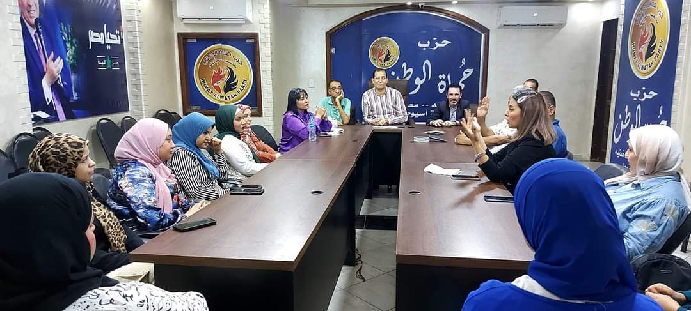
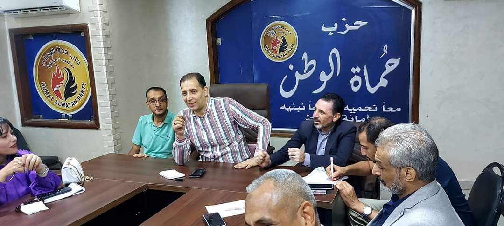
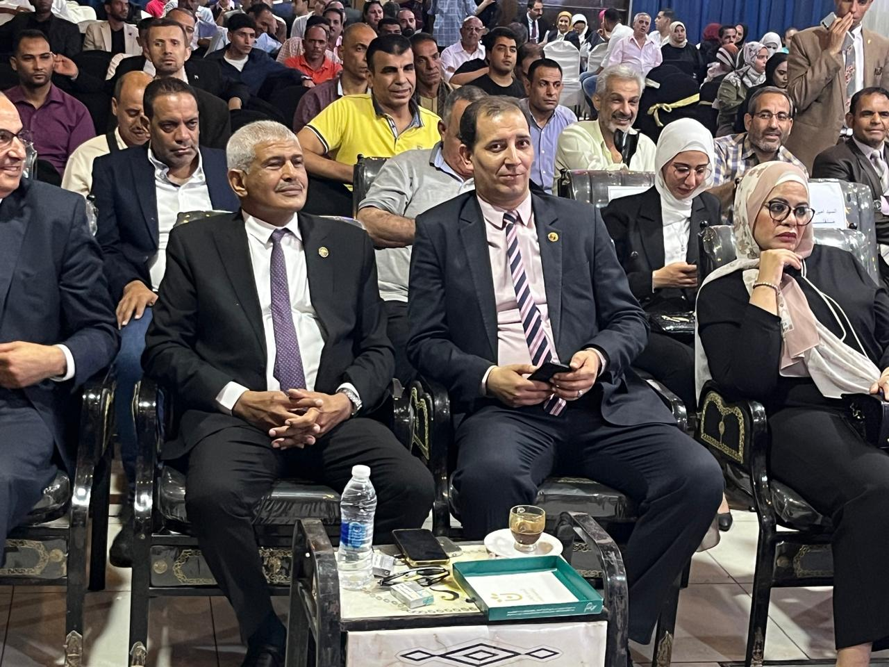
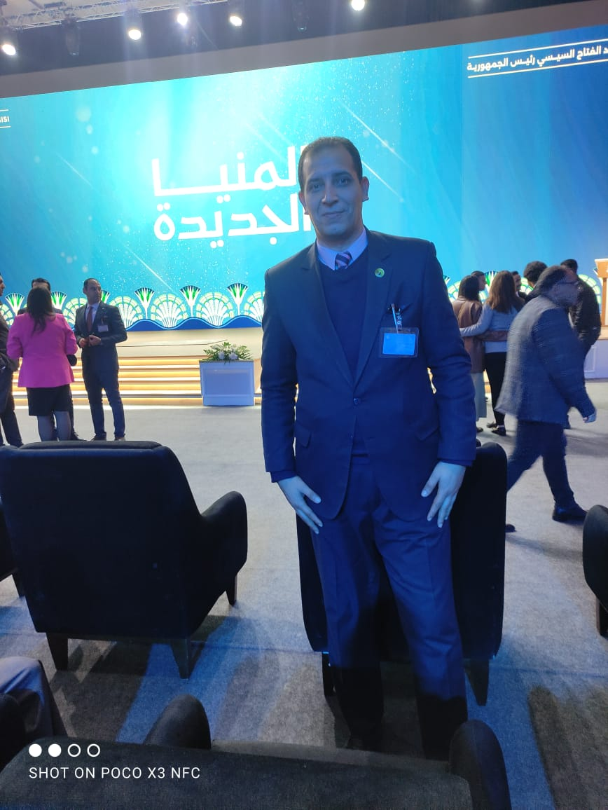

×

تابع أحدث الفعاليات والأنشطة المميزة
انعقد اجتماع أمانة التدريب والتثقيف بمحافظة أسيوط برئاسة أحمد ياسين حسن، أمين التدريب والتثقيف بالمحافظة، لمناقشة خطط العمل المستقبلية وتعزيز دور التثقيف في خدمة المجتمع..


شهدت محافظة أسيوط انعقاد دورة تدريبية بعنوان “التأهيل السياسي”، بحضور أحمد ياسين حسن، وذلك ضمن جهود أمانة التدريب والتثقيف لتعزيز الوعي السياسي وإعداد كوادر قادرة على المشاركة الفعالة في العمل العام.

شهدت محافظة المنيا انعقاد مؤتمر هام بحضور فخامة الرئيس عبد الفتاح السيسي، كما حضر أحمد ياسين حسن ضمن المشاركين في فعاليات المؤتمر.
